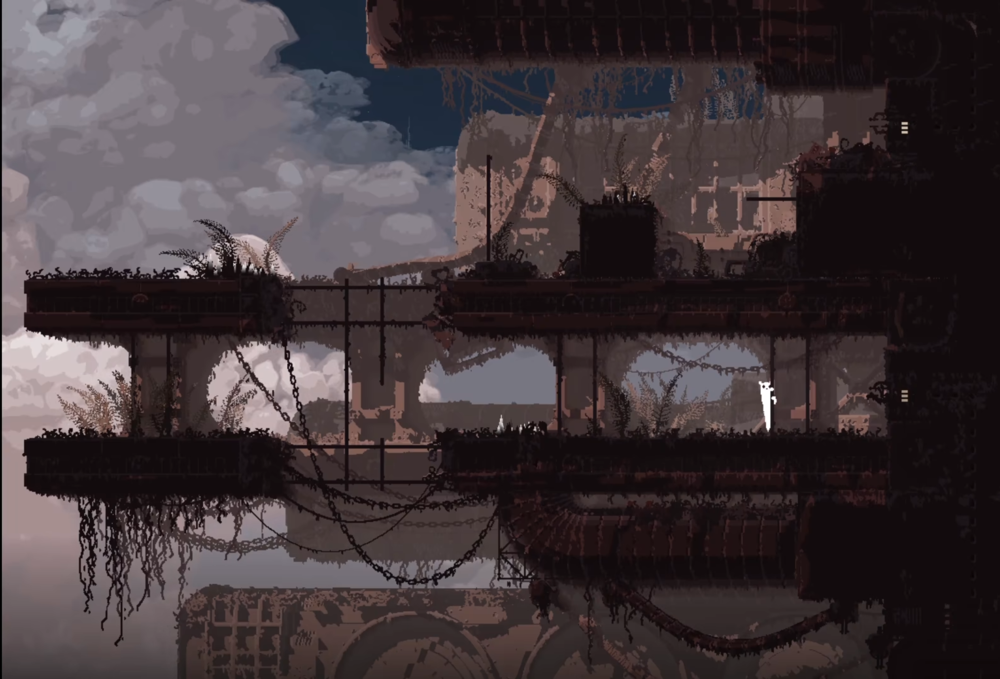

(↓English version below↓)
中文版:
终于通关了《雨世界》，经历了各种艰难，查阅攻略才完成。这款游戏虽已问世七年，但以现在的标准来看，无论在美术、玩法、机制还是剧情上都达到了极高的水准，是我心目中制作最精良的2D游戏之一。
《雨世界》是一款基于Unity引擎制作的2D独立游戏。在游戏中，玩家扮演一种被称为“蛞蝓猫”的生物，在古代文明遗留下的废墟中探索生存。乍一看似乎是传统的探索类RPG，但制作组在美术和机制上的精细打磨，使其脱颖而出。 首先是美术方面。玩家在控制蛞蝓猫时，会穿越古文明的废墟，随处可见裸露的钢筋架、断裂的管道和通风系统，彰显了曾经的文明辉煌。然而，这一切又被层层植被覆盖，形成了一个繁盛的生态系统。废墟的“破败”与新生命的“生机”相互交织，又形成鲜明的对比。 这种感觉在蛞蝓猫进入古代遗迹、仍在勉强运作的巨大结构中达到顶峰。游戏中的“迭代器”内部，广阔的“系统总线”宛如八车道高速公路，而神经元组件则如同深海中的荧光鱼群，又似星辰在无重力场中漂浮。古文明的宏伟与蛞蝓猫的渺小对比鲜明，让人既震撼又惋惜。 在机制方面，制作组赋予《雨世界》每种生物不同的AI，并使用类似3D骨骼绑定技术制作所有动物。这让游戏中的生物不仅具有基本的“战或逃”反应，还具备一定的思考和判断能力。结合流畅自然的动作，构建了一个栩栩如生、完整的生态系统。这种生态还原程度，即使在以生态系统为卖点的游戏中也十分罕见。  生命在古代废墟中焕发，渺小的蛞蝓猫在其中穿行。冷却水自迭代器中排出，如瀑布般的大雨冲刷着新生的生命。这正是我喜爱《雨世界》的原因: 抛开剧情对轮回与虚无主义的探讨，化身食物链低端的蛞蝓猫，在这个精心构建的世界中游荡，细细感受曾经与现在的一切，这本身就是一种极大的美好。图片参考b站视频 BV1gg4y1d7oj
English Version:
Finally, I have completed Rain World after going through countless difficulties, and I had to rely on guides to make it through. Though this game has been out for seven years, by today’s standards, whether in terms of art, gameplay, mechanics, or story, it still stands at an impressively high level. In my opinion, it’s one of the most exquisitely crafted 2D games ever made.
*Rain World* is a 2D indie game made using the Unity engine. In the game, players take on the role of a creature known as the "Slugcat," exploring and surviving in the ruins left behind by an ancient civilization. At first glance, it may seem like a traditional exploration RPG, but the development team's meticulous polishing of both the art and mechanics sets it apart from the rest. Starting with the art, as the player controls the Slugcat, they traverse the ruins of an ancient civilization. Exposed steel structures, broken pipes, and ventilation systems are visible everywhere, showcasing the glory of a once-great civilization. Yet, all of this is overgrown with layers of vegetation, creating a flourishing ecosystem. The contrast between the "decay" of the ruins and the "vitality" of new life intertwines, forming a striking juxtaposition. This feeling reaches its peak when the Slugcat enters the still-operational massive structures of the ancient ruins. Inside the game’s "Iterators," the vast "system buses" resemble eight-lane highways, while neuron components appear like glowing schools of fish in the deep sea, or stars drifting in a zero-gravity field. The grandeur of the ancient civilization stands in stark contrast to the small Slugcat, evoking both awe and regret. On the mechanics side, the development team gave each creature in *Rain World* its own AI, utilizing a technology similar to 3D skeleton rigging to animate all animals. This means the creatures in the game not only have basic "fight or flight" reactions but also possess a certain level of thinking and decision-making ability. Combined with smooth and natural movements, this builds a vivid and complete ecosystem. The level of ecological simulation here is rare, even among games that specifically market their ecosystems as key features. Life thrives within the ancient ruins as the tiny Slugcat roams through it. Cooling water is discharged from the Iterators, with torrential rains washing over newly born life. This is why I love *Rain World*—setting aside the story's exploration of the themes of reincarnation and nihilism, simply becoming a low-level creature in the food chain, wandering through this meticulously crafted world and slowly feeling everything from the past and the present, is an immense beauty in itself.Image reference from the Bilibili video BV1gg4y1d7oj